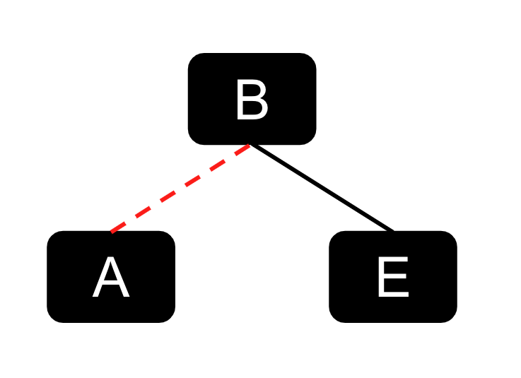
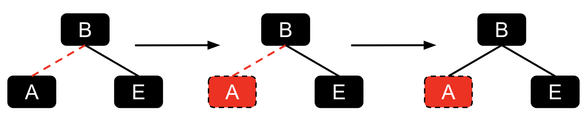
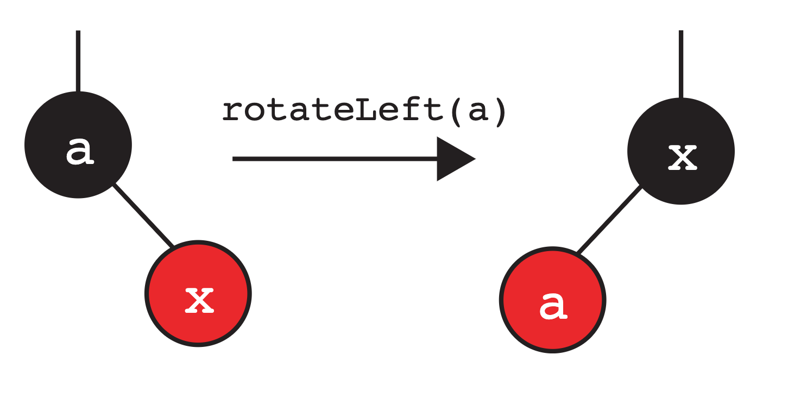
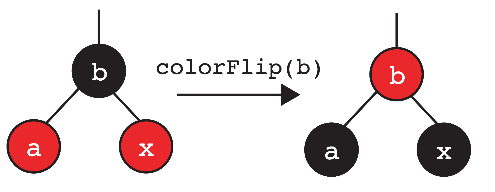
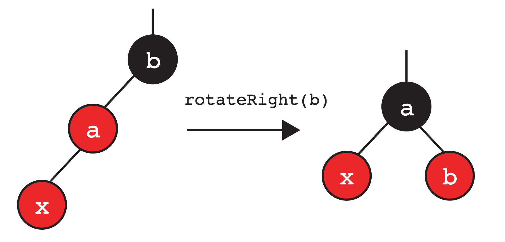

Lab 07: LLRBs
FAQ
The FAQ for this lab can be found here.
Before You Begin
As usual, pull the Lab 07 files from the skeleton and open them in IntelliJ.
Learning Goals
In this lab, we will be implementing left-leaning red-black trees.
Introduction
In the previous labs, we’ve analyzed the performance of algorithms for access and insertion into the binary search tree. However, in some cases, we’ve always assumed that the trees were balanced - as we’ve seen, it’s possible to produce a spindly tree that affects the performance of our data structure.
Informally, a tree being “balanced” means that the paths from the root to each leaf are all roughly the same length. Any algorithm that looks once at each level of the tree – such as searching for a value in the binary search tree – only looks at the number of layers. In regard to the binary search tree, the smallest number of layers we can have is logarithmic with respect to number of nodes (i.e. \(\log N\)).
To maintain this property of “balanced”, we want to prevent the worst case scenario of obtaining a “spindly” tree, which leads to worse performance times. This is where balanced search trees/b-trees come in - they are effectively self-balancing and will maintain the “balanced” property that we want.
However, in this lab, we won’t be focusing on implementing balanced search trees - why? While they do guarantee that a path from the root to any leaf is \(O(\log N)\), they’re also notoriously difficult and cumbersome to code, with numerous corner cases for common operations. They are still commonly used and provide plenty of benefits, but they do have drawbacks. Keep in mind that we’ll still reference balanced search trees throughout this lab (any reference to a balanced search tree from here on out is a reference to a 2-3 tree).
We then turn our attention to a related data structure: left-leaning red-black trees. We recommend that you review the relevant lecture slides before getting started on this lab.
Links vs Nodes
Please do not skip this section. This is important for you to read before you continue on with the rest of the lab. It will be much harder for you if you do not read this section.
In lecture, we’ve introduced the concept of LLRBs with links. However, for this lab, we will not be representing our LLRBs with links. Instead, we’ll be using nodes. The main reason for this is that the implementation with links is much harder than with nodes. To cover our ground here, consider the example below of how we’ve introduced the visualization of it in lecture.

For this lab, since we’ll be handling colored nodes - the relationship between the red link and its connected node can be defined like below:

Originally, A was connected to B by a red link. But if we use colored nodes in our representation
instead of links, A itself would be colored red. The visualization above is meant to show
how a red link would map to a colored node, so please keep this mind for the rest of the lab!
Be aware of the relationship between the colored link and the corresponding colored node, as for the rest of the lab, we’ll be using colored nodes in our examples and descriptions to make the lab implementation easier.
Left-Leaning Red-Black Trees
At its core, LLRBs are just a binary search tree, but there are a few additional invariants related to “coloring” each node red or black. This “coloring” creates a one-to-one mapping between 2-3 trees and LLRBs! In particular, every 2-3 tree corresponds to exactly one LLRB, and vice-versa.
The consequence is quite astounding: LLRBs maintain the balance of 2-3 trees while inheriting all normal binary search tree operations with additional housekeeping.
LLRB Tree Properties
We now specify some properties of LLRB trees. In particular, we use the one-to-one mapping between valid LLRB trees and 2-3 trees to derive some of these properties.
- Using colored nodes as our representation, the root node must be colored black.
- Our interpretation of red nodes is that they are in the same 2-3 node as their parent. The root node has no parent, so it cannot be red.
- If a node has one red child, it must be on the left.
- This makes the tree left-leaning.
- No node can have two red children.
- If a node has two red children, then both children are in the same 2-3 node as the parent. This means that the corresponding 2-3 node contains 3 keys, which is not allowed.
- No red node can have a red parent (every red node’s parent is black).
- If a red node has a red parent, then both the red child and red parent are in the same 2-3 node as the red parent’s parent. This means that the corresponding 2-3 node contains 3 keys, which is not allowed.
- In a balanced LLRB tree, every path to a null reference goes through the same number of black nodes.
- In a balanced 2-3 tree, every null node is the same distance from the root. We also know that every black node in an LLRB tree corresponds to exactly one node in the equivalent 2-3 tree. Therefore, every null node in an LLRB tree is the same number of black nodes from the root.
Inserting Into LLRB Trees
Insertion into LLRB trees starts off with the regular binary search tree insertion algorithm, where we search to find the appropriate leaf location.
Whenever we insert a node into a LLRB, we insert it as a red node.
However, once we’ve placed the node, this can can break the LLRB invariants, so we need additional operations that can “restore” LLRB properties. We know that there is a one-to-one correspondence of valid LLRB to 2-3 trees. Let’s use this correspondence to try to derive these operations.
We’ll cover different cases when our invariants are broken and the appropriate operations to fix them.
Invariant: If a node has one red child, it must be on the left
As mentioned, our inserted node will be red. Let’s say we insert our node into our
LLRB and it ends up as a right child of node a (this implies that the value in our
node is greater than a). Let’s assume that the left child of node a is black or
doesn’t exist. This breaks our invariant, where “If a node has one red
child, it must be on the left”. Since we can’t have any red-leaning nodes, we
would want to rotate left on the parent node. An example is shown below:

Invariant: No node can have two red children
Let’s consider another case. Similar to above, we insert our node into the LLRB
as a red node, and it ends up as the right child of node b (in this example).
What happens when node b’s left child is a red node? This then breaks the invariant
of “No node can have two red children”. We then perform the operation
“color flip” on the parent. Here, we apply the color flip operation on b,
flipping its color and its childrens’ colors.

We will return to this configuration later.
Invariant: No red node can have a red parent (every red node’s parent is black)
This can be broken down into two cases defined below.
Two consecutive left-leaning red nodes.
What happens if we insert our node and it ends up as a left child of a red node? In this case, we then want to adjust our operation and “rotate right” (in other words, it is not possible to have two left-leaning red nodes).
Rotating right is the opposite of rotating left! It will give us back the original subtree if applied to the new root.
In this case, we rotate right on b:

At this point, we notice that it’s the same pattern as the previous case, so
we apply a color flip to a.
Red node with a right-leaning red child/node.
In the other case, we might end up with our node becoming the right child of an already red node. In this case, we then apply our rotate left operation.
As shown below, we rotate left on a in this example and we get:

Note that this ties into the invariant mentioned above, where we can’t have a
red-leaning right node. Here, we have the previous case again, so we know that we can rotate right on
b and apply a color flip to the root, x.
Upward Propagation
Hold on – notice that some of these cases we just covered have ended up in a color flip. What if the subtree we modified was a right subtree, and the rest of the tree looked like this:

Just like how pushing up a key in a 2-3 tree may result in overstuffing the parent node, performing these transformations may also violate an LLRB invariant, giving us one of these three cases again. We resolve these cases until we either:
- Do not have any broken invariants
- Flip the root’s color
What this means is that performing some of these operations (color flip,
rotate right, or rotate left) may end up breaking another invariant, resulting
in more operations. As we try to resolve these cases, these transformations
effectively work up the LLRB tree until we’ve resolved them according to the
conditions above.
In some cases, we must remember to flip the
root back to black in our representation.
LLRB Insertion Summary
This section will the most helpful for lab, as you can refer to the diagrams below on how you would perform the three operations. Consider how you can translate the rotation operations and color flip operations to a problem involving nodes and pointer reassignments.
We discussed three operations that we can use to “fix” the LLRB invariants after inserting a node. Because it’s possible to have upward propagation as mentioned above, let’s try to generalize our operations a little more visually (specifically for our rotations).
We have two rotations, that can be used to move a right child or left child up into their parent’s position:

Here’s a brief description of what happens when we rotateRight(b):
- The root of the subtree has changed from
btoa. aandbhave moved to the “right”.- The two nodes swap colors so that the new root is the same color as the old root.
- The reorganized subtree still satisfies the binary search property.
Here’s a brief description of what happens when we rotateLeft(a):
- The root of the subtree has changed from
atob. aandbhave moved to the “left”.- The two nodes swap colors so that the new root is the same color as the old root.
- The reorganized subtree still satisfies the binary search property.
We also have the color flip operation:
LLRB Tree Implementation
Have you read this section yet? If you haven’t done so, please do before you start implementing this lab.
Before starting, make sure to read through the entire class, RedBlackTree.java, especially
the provided nested node class. Make sure to also read the comments for each method!
Exercise: Color Flip
Let’s first consider the color flip operation that is essential to LLRB tree implementation. Given a node, this operation simply flips its color and the children’s colors.
Implement the flipColors method in RedBlackTree.java.
Exercise: Rotations
We have seen that we can rotate the tree to balance it without violating the binary search tree invariants. Now, will implement it ourselves!
For your implementation, make sure to swap the colors of the old root
and the new root!
Hint: The two operations are symmetric.
Should the code significantly differ? If you find yourself stuck, take
a look at the examples that are shown above!
In RedBlackTree.java, implement rotateRight and rotateLeft.
Exercise: insert
We will now implement insert in RedBlackTree.java. We have provided you
with some of the logic structure with comments. The first part of insert
should hand normal binary search tree insertion. You’ll then want to handle
the different cases that causes one of the operations
(rotateLeft, rotateRight, colorFlip) to occur. Make sure you follow
the steps from all the cases very carefully!
Make sure to use the methods you’ve already implemented (rotateRight, rotateLeft,
flipColors) to simplify the code writing.
The helper method isRed has already been provided to you in
the skeleton code so make sure to use it!
Implement the insert method in RedBlackTree.java.
Testing
All tests have been provided to you locally. If you pass all tests in
TestRedBlackTree.java, you will receive full credit on Gradescope.
Comments have been provided for you throughout the tests
to help you further debug.
Deliverables
Complete the following methods in RedBlackTree.java:
flipColorsrotateRightandrotateLeftinsert
This lab is worth 5 points.